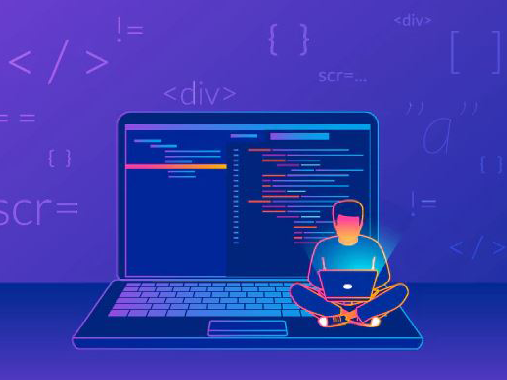
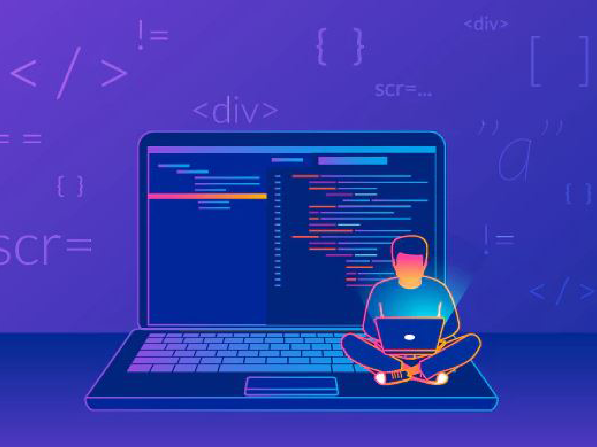

BSc Computer Science (Software Engineering)
Why study a BSc in Computer Science – Software Engineering at The British University in Dubai?
The study of Software Engineering is designed to enable students to develop good software and give them the engineering skills needed to meet the requirements of the information technology market such as reliability, maintainability, usability, and cost-effectiveness.
Our programme helps students develop a thorough understanding of the theoretical and practical aspects of Computer Science and Software Engineering and of their interrelationships. It is directed towards the practical application of computing sciences, as computer systems grow in size and complexity. For example, the recent major trend is the Fourth Industrial Revolution or Industry 4.0 for establishing a “smart factory”. It is an integration of Computer Science and smart solutions, for the automation and data exchange in manufacturing technologies. It includes cyber-physical systems, the Internet of Things, cloud computing, and cognitive computing. At BUiD we support students to get such experiences by giving them the opportunities to participate in study trips and internships, both in the UAE and internationally.
 

Programme description
Software systems are the cornerstones of all modern business. Such systems are often complex and long lived, and must be robust and adaptable. Students will learn how to plan and manage software architectures for practical large-scale development projects, while adopting an academic and rigorous approach which will support them throughout their career. Specifically students will learn how to understand customer requirements; specify, design and code a computer solution; and test and release their solutions to their customers. They will learn software modelling techniques such as UML, business concepts such as project management, and techniques for developing innovations in technology.
Project work is seen as highly desirable by employers. In the final year, students undertake an individual problem-based project, exercising their creativity and innovation to design and implement a software solution to a problem. Software engineering projects include 3-D games, mobile phone/tablet apps, security software, internet telephony, programming robots, sheet music editing, theorem provers, and many more.
Career prospects
If you are considering studying a Bachelors in Computer Science – Software Engineering, you probably already know that this can lead to a very wide range of careers and jobs. According to data from job search sites, we will keep on observing employment development in anything Software Engineering-related for the following five to ten years. The following are the top six most in-demand: Software Engineering jobs: data scientist, research scientist, business intelligence analyst, software quality assurance (QA) tester, IT security analyst, and web developer.
The job opportunities do not end with the categories listed above. You can find other types of jobs related to Computer Science – Software Engineering that suit your needs. The best part is that this field is continually developing, so new job titles and new tasks will come up all the time.

Course Structure